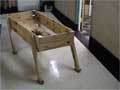

people doing strange things with electricity
The eighteen millionth dorkbot-nyc meeting took place on Wednesday, December 1st, 2004, 7pm at
Location One in SoHo.
It featured the lovely and talented:
Andrew Senior: analogue to digital: via digital analogues and digital digital images
Andrew Senior draws on a range of influences and media to create works that investigate identity, landscape, and perception. In this talk he will focus on his progression from physical to computer-based works, particularly synthetic video animations. The subtitle will be explained as we go along.
http://andrewsenior.com
Fred Adler (AKA Qatar): Ask Qatar
Adler will present Ask Qatar, a divination system based on the i-ching. This unique interpretation of the i-ching utilizes a 3-d shockwave interface and quicktime. Fred will talk about the process of making this cutting edge application and the challenges of making it work online vs. as a stand alone video game.
http://www.askqatar.com
 Douglas Repetto: How To Build a Horse Table
Douglas will talk about the process of building his walking table for Ralph Lemon's Come Home Charlie Patton at BAM this fall.
http://music.columbia.edu/~douglas
Some images from the meeting are here.